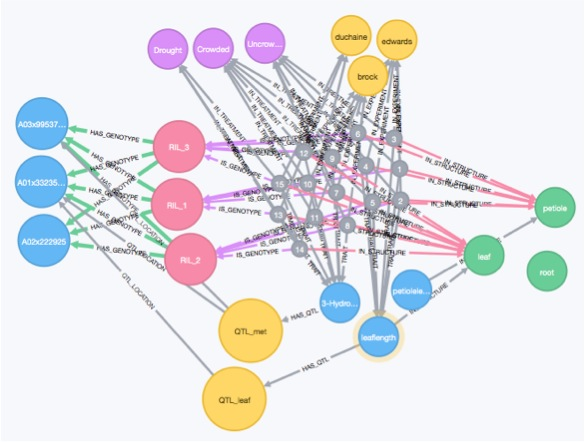

Postdoc
Physiological Systems Biology of Competition in Brassica rapa
Plants growing in dense stands compete with one another for light resources at the top of the canopy. When plants sense neighbors through the phytochrome photoreceptor system they become apical dominant and grow upwards to maximize light capture. This response is termed shade avoidance and has very important ecological and agronomic consequences if plant resources are used for competitive growth instead of reproductive output. For example, over-seeding in an agricultural field is wasteful of seed resources if many individuals die after competing with neighbors for limited light and nutrient resources. In ecological settings, mixed plant communities are competing for resources in a similar way to agricultural settings, but without the direct human management of inputs. In order to study the agronomic and ecological consequences of competition I am worked with the emerging model species Brassica rapa. B. rapa is an ideal model for plant competition research because it has a sequenced genome, is both a crop and a weed in agricultural settings, and is a highly morphologically and physiologically diverse species. I approached this from many different angles that relied on my diverse research background and interests.

1) B. rapa trait database

Hard won biological data (especially from the field) should not just sit in a lab note book or on spread sheets scattered across various machines. Sharing phenotypic data after publication should be a priority for us as a community, just like putting sequencing data into NCBI databases (see Zamir 2013). This allows for the data to be used to ask multiple questions, for modeling, or to be analyzed using systems biology techniques. Towards all these goals I designed a graph database to house all of the published trait data, experimental meta-data, publications, gene expression data, from the B. rapa population.
A partial realization of this work has come out of working with an undergraduate Tiffany Ho to create an interactive data visualization tool to examine co-occurrence of eQTL with physiological QTL called QTLVisR.
2) Statistical Genetics
In collaboration with Mike Covington (who generated the SNPs), I created a saturated genetic map for this population (here). This new map, along with a Bayesian statistical approach and my graph database all blends together into a fun data science project. I am remapping all the published traits in the database using a multi-trait approach. This data is used directly in the next two aspects of my project.
Markelz et al. 2017
Brock et al. 2016

3) Multi-Scale Data Integration
The central dogma of molecular biology says DNA → RNA → Protein. Scaling the actions and interactions of proteins spatially across tissue or cell types is physiology. Scaling the actions of physiology across space and time is development. Updating the simple model to include physiology and development would look something like this: DNA → RNA → Protein → Metabolites → Physiology → Development. Of course there are feedbacks every step of the way, and it is hard to disentangle each of these into separate processes, but this simple conceptual model goes a long way. If there is a genomic location for these interactions explaining some of the variance observed in the physiological or developmental phenotype, then there is a QTL in that genomic location. QTL studies are conducted using genetic mapping populations where the parents of these populations are differ significantly from one another in the trait of interest. Up until recently, a majority of QTL studies have focused on traits that are the result of many proteins interacting one level of biological organization below the physiological or developmental trait. It is a large jump in biological organization to work backwards from physiology and development to DNA sequence differences. Quantifying messenger RNA (mRNA) acts as a stepping stone between the physiology and the DNA. Or to put it another way, mRNA can provide clues as to what proteins cells are planning to make given the current information from internal developmental and external environmental cues. The collection of mRNA expression is generally referred to as the gene co-expression network. I am interested in understanding the gene co-expression network and how it relates to DNA polymorphisms in one direction and physiological and developmental phenotypes in the other direction. In order to be able to do this, we not only need a good understanding of the biology, but we also need a good understanding of the ways in which these pieces of biological information fit together. I developed statistical techniques to connect these pieces of information in a probabilistic framework.
Baker et al. 2019
Markelz et al. 2017
Brock et al. 2016
Baker et al. 2015
4) Genetically Informed B. rapa Physiological Growth Models
I am using this data to parameterize physiologically based models of plant growth. Coming full circle to my PhD work in metabolism and physiology. This is my favorite part of my project. It involves integrating environmental time course data, physiological QTLs, and programming mathematical models of plant growth. Based on my meta-analysis results, and preliminary physiological modeling results, I choose a subset of genotypes to grow in the field for 2014 to test model predictions. The field site I work at is home to three close collaborators at University of Wyoming: Dr. Rob Baker, Dr. Marc Brock, and Dr. Cynthia Weinig.
Baker et al. 2019
Baker et al. 2015
Here is a preview of a canopy scale model output predicting peak canopy N content for four different treatments. Notice that there is a clear interaction between N availability and crowding as to when there is peak canopy N.

5) Computer Vision Plant Quantification and 3D Reconstruction
I developed a high-throughput 3D imaging robot and analysis pipeline to take non-destructive plant growth data for model calibration/validation of Brassica rapa. It was really enjoyable to build equipment. It pulls together many ways of thinking about biological problems. It forces the biologist to really think about what process they are trying understand and how to quantify it using some sort of sensor. These projects help biologists build intuition about measurement error, instrument limitation, methods development, materials selection, and design. These are skills that are undervalued in biology.
Bucksch et al. 2017
Friesner et al. 2017
I also co-designed a similar system for measuring Arabidopsis growth.